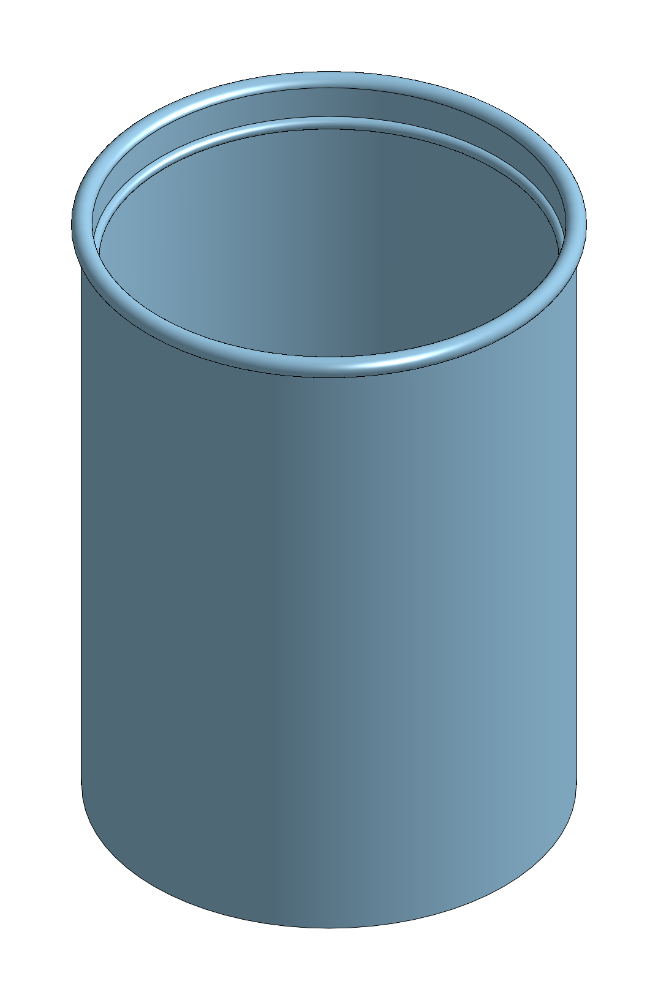

elephant cup: the conversation
The session of 2026-09-30 on branch elephant, from Mike’s first message to Claude’s answer to Please take a note of this time and message. Every time, message, tool call and token count below is read from Claude Code’s transcript of the session by make_report.py. Times are Eastern Daylight Time.

The cup, isometric, rendered by Onshape from the named version “cup, 12 fl oz with 1 fl oz headroom”.
Where the work is
Onshape document |
|
Workspace |
|
Part Studio |
|
Named version |
“cup, 12 fl oz with 1 fl oz headroom”, id |
Version link |
https://cad.onshape.com/documents/9a8f8614c04120c0a8f85448/v/1f0631a4e8285baf2d33f860 |
Git |
branch |
Repository record |
|
The session
Model |
Claude Opus 5.5 ( |
Started |
2026-09-30 13:17:12 EDT |
Ended |
2026-09-30 16:18:46 EDT |
Elapsed |
3 h 1 min 34 s, most of it waiting on Mike between messages |
Claude working |
12 min 39 s, the sum of the turn durations |
Messages from Mike |
9 |
Tool calls |
58 |
Replies from the model |
55 |
Output tokens |
49,545, of which 19,312 were thinking |
Input tokens, new |
325,697 (112 uncached, 325,585 written to the cache) |
Input tokens, from cache |
7,423,351 |
Input tokens, all |
7,749,048 |
Each reply sends the whole conversation so far as input, so the input total counts the same early context once per reply; most of it is served from the cache. The counts cover the main session only. No subagent was started.
The timeline
One section per message from Mike. Each opens with his message, then Claude’s tool calls and messages in the order they happened. What came back is the last line a shell command printed, or the first line of an error, cut short where it is long. Paths under the session’s temporary directory are shortened to session-tmp/.
13:17:12 EDT
Working time 11 s; 1 reply; 978 output tokens.
Mike, 13:17:12
hi
Claude, 13:17:23
Hi Mike.
The Constitution (v8.1.0). It governs all work here and overrides CLAUDE.md and any other ad-hoc guidance. In brief:
Working rules.
Think before acting, and ask when unsure.
Keep changes simple, and touch only what the task needs.
Read what exists before adding to it.
Fail loudly, and never claim a check I didn’t run.
Keep code in evergreen paths free of version names.
Give work units dotted names, not numbers.
Checkpoint long tasks.
Update the docs in the same commit as the change.
Plans.
active-plan.mdpoints at the plan in force. A plan stays active until you and I agree it’s finished, and then the pointer is emptied.Quality gates. “Done” means the gates are green and I watched them go green.
ninja checkcovers spelling, capture-out and imports. The rest (steps reproduce, names are real, links resolve, model inspected, floor and ceiling, recovery point, prose style) are checked by hand. For a run, we agree which gates apply before it starts.Evidence. Build it before writing it. Look at the model in views that show each feature, and compare it with its source. Pictures beat measurements.
Branches and publishing. Work on a feature branch and push only when you ask. Only the live draft gets written to. A cited Onshape workspace is not moved.
Prose. The rule goes in the bold title, and each thing is said once. Every quantity carries its unit. RFC 2119 words appear only where obligations are set. Student text is at grade 8 or below.
Skills and memories. I invoke a skill before the work it covers starts, and I read the memories that bear on the task.
Where things stand. active-plan.md still points at draft9p5. Every tab and ring item is checked off except the per-tab versions. Those were not published because a version covers the whole document; the recovery point is the robot, all ten tabs. The plan stays active until we agree it’s finished, so you might want to decide whether to close it.
There’s no task yet, so which parts apply comes later. I agree to follow the Constitution, so help me ‘bot. What would you like to work on?
13:19:29 EDT
Working time 11 s; 2 replies; 592 output tokens.
Mike, 13:19:29
can you create a new branch fr an experiment cab project?
Time |
Tool |
What was done |
What came back |
|---|---|---|---|
13:19:33 |
Bash |
List branches and compare main2 to main
|
105 codespell:ignore |
Claude, 13:19:40
Yes, I can. I need two things from you first:
What the experiment is. I read “cab” as CAD, but I’d rather check than guess. It also sets the branch name.
experiment-<topic>would match the plain names you use now, likemain2.Which branch to start from. I’d use
main2. It’s 105 commits ahead ofmainand has all of draft9p5.mainis still at Constitution 5.8.0.
Also, draft9p5 is still the active plan. If this experiment is new work, we should agree to close draft9p5, or point active-plan.md at the new plan, before any of its work starts.
13:20:40 EDT
Working time 6 s; 2 replies; 231 output tokens.
Mike, 13:20:40
yes, CAD, branch is off of main2, and we cak=n call it elephant
Time |
Tool |
What was done |
What came back |
|---|---|---|---|
13:20:42 |
Bash |
Create and switch to branch elephant from main2
|
## elephant codespell:ignore |
Claude, 13:20:46
I created the branch elephant from main2 and switched to it. The working tree is clean. It’s only local: I haven’t pushed it, and I’ll wait until you ask.
active-plan.md still points at draft9p5, so before any experiment work starts we need to decide whether to close that plan or point at a new one.
13:24:00 EDT
Working time 40 s; 3 replies; 3,543 output tokens.
Mike, 13:24:00
in a new scratch on shape document cad using the api, create a cup to hold 12 ounces of water and a one ounce for liquid over fill. dont cad this until we agree on final design
Time |
Tool |
What was done |
What came back |
|---|---|---|---|
13:24:15 |
Skill |
Loaded the modeling-practice skill |
|
13:24:17 |
Bash |
Read the memories that bear on designing a model
|
hundredths of a millimeter, even where the value is exact inside `make_plans.py`. codespell:ignore |
13:24:22 |
Bash |
Compute cup inner dimensions for 12 and 13 US fl oz
|
d for brim at 100 69.96459355365411 codespell:ignore |
Claude, 13:24:40
Here’s a proposed design. I haven’t touched Onshape and won’t until we agree on it.
Proposed cup
The cup’s size comes from the volume you want. You set the volume and the inside diameter, and the heights are calculated from them. Change the volume and the cup gets taller on its own.
Variable |
Value |
Meaning |
|---|---|---|
|
12 fl oz (354.88 cm³) |
Water it holds up to the fill line |
|
1 fl oz (29.57 cm³) |
Space between the fill line and the top edge |
|
70 mm |
Inside diameter |
|
2 mm |
Side wall thickness |
|
3 mm |
Bottom thickness |
|
|
Fill line height, above the inside floor |
|
|
Inside depth up to the top edge |
That makes the outside 74 mm across and about 102.9 mm tall. The 1 fl oz of extra space is 7.7 mm of wall above the fill line.
How it’s built. One sketch on the Front plane: a half cross-section drawn against the origin, dimensioned only with the variables above, and fully defined. A revolve around the vertical axis turns it into the cup. A straight-sided cup is the simplest shape where “height from volume” is one exact formula.
What I need you to decide
US or imperial ounces? I assumed US (29.57 mL). Imperial (28.41 mL) makes every height about 4 % smaller.
How is the fill line shown? It could be a small ridge on the inside wall at
#fillH, a groove on the outside, or nothing (the math is the only line).Straight sides or tapered? A taper lets cups stack. The catch: its fill height comes from solving a cubic, so it can’t be a simple Onshape expression and would have to be computed outside the model.
Handle, and rounded rim? Neither is in the design yet.
Will you print it? If so, I’ll keep 2 mm walls and a flat bottom. I won’t change the shape to suit the printer.
Document name. For example
elephant cup. Your API permission for draft9p5 named that document only, so I’m reading your message as permission to build this new document over the API, under whatever name you pick.
Two things I’ll check when I build it, not before. Whether an Onshape variable can take a volume unit like fl oz; if not, I’ll write the volume in mm³. And whether a revolve’s height can be driven by an expression that divides one variable by another.
About the plan file. active-plan.md still points at draft9p5. Once we agree on the design, I suggest writing it into a plan under .docs/experiments/runs/ and pointing active-plan.md at that instead. Shall I close draft9p5 then?
13:27:53 EDT
Working time 29 s; 1 reply; 2,700 output tokens.
Mike, 13:27:53
us ounces, a ridge line is great idea, document name is great too, make wall thickness 1.5 mm. no handle, lip style rim at the top
Claude, 13:28:22
Here’s the full design with your changes. Nothing is built yet.
Cup design, for your sign-off
Variable |
Value |
Meaning |
|---|---|---|
|
12 fl oz (354.88 cm³) |
Water up to the fill line |
|
1 fl oz (29.57 cm³) |
Space between the fill line and the top edge |
|
70 mm |
Inside diameter |
|
1.5 mm |
Side wall |
|
3 mm |
Bottom |
|
1.5 mm |
Radius of the round lip at the top |
|
1 mm |
Radius of the fill-line ridge |
|
|
Center of the ridge, above the inside floor |
|
|
Top of the lip, above the inside floor |
Shape. Straight sides, no handle. Outside wall 73 mm across; the lip sticks out to 76 mm. Overall height 102.9 mm. The bottom of the cup sits on the origin, standing on the Top plane.
Lip. A round bead of radius
#lipRat the top of the wall. It lines up with the inside wall and sticks out 3 mm past it, so the wall’s outside gets a 1.5 mm step up to the bead. Its top is at#brimH, so the cup overflows exactly at 13 fl oz.Ridge. A half-round bump of radius
#ridgeRrunning around the inside wall, centered at#fillH. Water filled to the middle of the ridge is 12 fl oz.Construction. One sketch on the Front plane: the half cross-section, with the lip and ridge as arcs, tied to the origin and the vertical axis, using only the variables above, and fully defined. Then one revolve around that axis.
Two small errors I’d leave alone:
The ridge takes up about 0.17 cm³ below the fill line (0.05 % of 12 fl oz).
The lip’s curve adds about 0.1 cm³ at the top.
Both are far smaller than you can pour to. If you’d rather cancel them out in the formulas, say so.
You didn’t answer about printing or closing draft9p5, so I’m taking both as no. The cup won’t be shaped around a printer. active-plan.md keeps pointing at draft9p5 until you say otherwise, so this cup gets no active plan.
If you agree, next I’ll invoke the onshape skill, create elephant cup, read its name back before the first write, and build it.
13:29:33 EDT
Working time 10 min 35 s; 40 replies; 40,285 output tokens.
Mike, 13:29:33
i agree please proceed
Time |
Tool |
What was done |
What came back |
|---|---|---|---|
13:29:35 |
Skill |
Loaded the onshape skill |
|
13:29:37 |
Bash |
Read Onshape API memories and list existing REST scripts
|
socket_spring.py codespell:ignore |
13:29:42 |
Bash |
Read document-creation scripts and the session helper
|
616:def solid_boxes(page: Page, doc: Doc) -> list[tuple[list[float], list[float]]]: codespell:ignore |
13:29:45 |
Bash |
Read the session helper’s API and feature builders
|
“delete_feature”, codespell:ignore |
13:29:50 |
Bash |
Read the build script header and list results
|
variable-first-reader.md codespell:ignore |
13:29:52 |
Bash |
Show the parent record’s first features as JSON templates
|
-— codespell:ignore |
13:30:00 |
Bash |
Extract a revolve profile sketch and its constraints as a template
|
[{“type”: 145, “typeName”: “BTMParameterEnum”, “message”: {“enumName”: “ExtendedToolBodyType”, “value”: “SOLI… codespell:ignore |
Claude, 13:30:05
I’m reading the draft9p5 build scripts to reuse their REST feature format (variables, sketch constraints, revolve) before writing the cup builder. Nothing has been created in Onshape yet.
Time |
Tool |
What was done |
What came back |
|---|---|---|---|
13:30:08 |
Bash |
Show revolve axis, dimension and variable JSON details
|
{“featureType”: “assignVariable”, “featureId”: “FXvcwPOAOM0kail_0”, “name”: “###name = #value”, “parameters”:… codespell:ignore |
13:30:15 |
Bash |
Search for how sketch entities are referenced by geometry id
|
258: Derived will not “just take everything” — every part must be named by its **`geometryId`**, codespell:ignore |
13:30:18 |
Bash |
Read the API doc on geometry ids and constraints
|
regenerated fine at creation and only broke later, when a metadata write triggered a rebuild. codespell:ignore |
13:31:16 |
Bash |
Check running browsers, sketch reader, and experiments folder
|
taught-path.md codespell:ignore |
13:31:20 |
Bash |
Read how the agent browser is launched
|
"”” codespell:ignore |
13:31:23 |
Bash |
Launch the headless agent browser, borrowing the session (in the background)
|
Command running in background with ID: br4x7q80b. Output is being written to: session-tmp/tasks/br4x7q80b.out… codespell:ignore |
Claude, 13:31:27
I’m starting the agent browser and writing the cup build script. It goes in .docs/experiments/2026-09-30-elephant-cup/.
Time |
Tool |
What was done |
What came back |
|---|---|---|---|
13:31:27 |
Bash |
Read the agent browser’s launch output
|
[exited with code 1] codespell:ignore |
13:31:51 |
Bash |
Check the signed-in browser and sign it back in
|
signed in as Mike Stitt codespell:ignore |
13:32:19 |
Bash |
Relaunch the agent browser with a fresh session (in the background)
|
Command running in background with ID: b0i4m4ekf. Output is being written to: session-tmp/tasks/b0i4m4ekf.out… codespell:ignore |
13:32:31 |
Write |
Wrote a file
|
|
13:32:32 |
Bash |
Check the agent browser came up signed in
|
(Bash completed with no output) codespell:ignore |
13:32:41 |
Bash |
Wait for the agent browser and read its status
|
agent browser is up; signed in as Mike Stitt codespell:ignore |
13:33:15 |
Bash |
Create the elephant cup document and record its ids
|
wrote .docs/experiments/2026-09-30-elephant-cup/ids.json codespell:ignore |
Claude, 13:33:52
Created elephant cup with its Part Studio renamed to cup. Next I’m writing the builder: variables, one constrained sketch, one revolve, with a read-back after each write.
Time |
Tool |
What was done |
What came back |
|---|---|---|---|
13:33:53 |
Bash |
Find how variable features were posted before
|
.docs/experiments/runs/2026-09-18-draft9p5/scripts/b_build.py:500: shown = m.get(“name”) if m.… codespell:ignore |
13:34:04 |
Bash |
Search for how full definition of a sketch was checked
|
.docs/robot-build-plan.md codespell:ignore |
13:34:07 |
Bash |
Read how fully-defined status is detected
|
.docs/onshape-api.md-176-For the body’s front face (normal −Y), sketch-local `(u, v)` mapped **directly to wo… codespell:ignore |
13:35:11 |
Write |
Wrote a file
|
|
13:35:14 |
Bash |
Build the cup’s variables, sketch and revolve with read-backs
|
ring 1: 11 features, state OK, rollback 11 codespell:ignore |
Claude, 13:36:01
All eleven features are in and every one reads back OK. Next I’m checking what the model actually measures: variable values, where the sketch landed, and the cup’s faces and volume.
Time |
Tool |
What was done |
What came back |
|---|---|---|---|
13:36:12 |
Write |
Wrote a file
|
|
13:36:14 |
Bash |
Measure the built cup’s variables, sketch and faces
|
part volume: 47274.390 mm^3 codespell:ignore |
13:36:36 |
Bash |
Compute capacities and solid volume from the measured faces
|
analytic solid 47274.5 mm3 vs measured 47274.390 codespell:ignore |
13:36:57 |
Write |
Wrote a file
|
|
13:36:58 |
Bash |
Name the part and run the drive test on the inside diameter
|
inside r 35.0 mm, floor z 3.0 mm, ridge centre z 95.2143 mm, lip top z 102.8989 mm; cylinder to the ridge cen… codespell:ignore |
13:37:14 |
Bash |
List GUI helpers and find a shadedviews caller
|
776:def zoom_to(page, target: float, at_px=None, tries: int = 4): codespell:ignore |
13:37:23 |
Bash |
Read the GUI helpers for opening, framing and tree rows
|
def one_camera(page, tries: int = 3): codespell:ignore |
13:37:36 |
Write |
Wrote a file
|
|
13:37:37 |
Bash |
Render the cup and screenshot its sketch in the GUI
|
states not OK after leaving the sketch: none codespell:ignore |
Claude, 13:38:06
The renders and the sketch screenshot are taken. I’m opening them now to look at the model.
Time |
Tool |
What was done |
What came back |
|---|---|---|---|
13:38:08 |
Read |
Read a file
|
|
13:38:09 |
Read |
Read a file
|
|
13:38:11 |
Read |
Read a file
|
|
13:38:23 |
Bash |
Count under-defined blue pixels and crop the lip region
|
blue px 3319 x range 21 1594 y range 3 997 codespell:ignore |
13:38:29 |
Bash |
Count blue sketch pixels on the canvas only
|
blue px on canvas 0 codespell:ignore |
13:38:31 |
Read |
Read a file
|
|
13:38:37 |
Read |
Read a file
|
|
13:38:45 |
Write |
Wrote a file
|
|
13:38:46 |
Bash |
Set the cup document’s workspace units to millimeters
|
read back from a fresh dialog: Millimeter, 0.12345 codespell:ignore |
13:38:59 |
Bash |
Read draft9p5’s version-publishing script
|
sys.exit(main(sys.argv[1])) codespell:ignore |
Claude, 13:39:03
The units now read in millimeters. Next I’m publishing a named version as the recovery point, then writing the record.
Time |
Tool |
What was done |
What came back |
|---|---|---|---|
13:39:08 |
Bash |
Publish and read back a named version of the cup
|
} codespell:ignore |
13:39:33 |
Write |
Wrote a file
|
|
13:39:34 |
Bash |
Run the repository’s mechanical checks
|
[4/5] no tracked python edits sys.path codespell:ignore |
13:39:42 |
Bash |
Run ninja check and capture its exit status and step lines
|
81:[4/5] no tracked python edits sys.path codespell:ignore |
13:39:50 |
Bash |
Stage the experiment files and rerun ninja check against them
|
5:.docs/experiments/2026-09-30-elephant-cup/drive.py:69: centre ==> center codespell:ignore |
13:39:56 |
Bash |
Fix the British spelling and rerun ninja check
|
81:[4/5] no tracked python edits sys.path codespell:ignore |
Claude, 13:40:08
The cup is built in elephant cup and matches the design we agreed.
Where it is
Document
elephant cup(9a8f8614c04120c0a8f85448), Part Studiocup, one part namedCup.Named version
cup, 12 fl oz with 1 fl oz headroom: https://cad.onshape.com/documents/9a8f8614c04120c0a8f85448/v/1f0631a4e8285baf2d33f860I built that link from the ids the API returned and haven’t opened it as another account would. I only opened the workspace, in the agent browser, as you.
What’s in it: the nine agreed variables, then the sketch cup profile on the Front plane, then revolve cup. All eleven read back OK after each write.
What I checked
Sketch: fully defined. I opened it in the GUI and looked square on; every entry is black and the blue-pixel check finds 0 px. The entries sit exactly where the design puts them.
Model: 36.5 mm outside radius and 35.0 mm inside, ridge center at 95.21 mm, lip top at 102.90 mm, flat bottom.
Capacity, worked out from the measured faces:
11.994 fl oz to the fill line (1 fl oz ≈ 29.57 cm³).
12.992 fl oz to the brim.
Both misses are the small ridge and lip effects we agreed to leave alone.
Drive test: at
#innerD80 mm the fill line and brim dropped, the cup still held 12.0000 fl oz, and nothing broke. It’s back at 70 mm and measures the same as before.Views: isometric, front and bottom look right: lip bead on the outside, ridge ring on the inside. I didn’t render a cross-section.
Other things to know
A pale blue horizontal line crosses the sketch screenshot at the ridge’s height. It isn’t a sketch entity, and I didn’t work out what draws it.
The new document came with an unused
Assembly 1tab. I left it; say if you want it deleted.I set the document’s units to millimeters so the variables read in mm instead of inches.
The Onshape session on your browser had signed out; I signed it back in with the repo’s
--signinscript, which lets Chrome’s saved credential fill the password.
In the repo: the scripts and a record (README.md, ids.json) are in .docs/experiments/2026-09-30-elephant-cup/ on elephant. They’re staged but not committed. ninja check passes; its reading-level step only lists paragraphs, it doesn’t fail. active-plan.md still points at draft9p5.
Shall I commit?
16:17:27 EDT
Working time 4 s; 1 reply; 69 output tokens.
Mike, in the shell, 16:17:27
$ git status
On branch elephant
Changes to be committed:
(use "git restore --staged <file>..." to unstage)
new file: .docs/experiments/2026-09-30-elephant-cup/README.md
new file: .docs/experiments/2026-09-30-elephant-cup/build.py
new file: .docs/experiments/2026-09-30-elephant-cup/create.py
new file: .docs/experiments/2026-09-30-elephant-cup/drive.py
new file: .docs/experiments/2026-09-30-elephant-cup/ids.json
new file: .docs/experiments/2026-09-30-elephant-cup/look.py
new file: .docs/experiments/2026-09-30-elephant-cup/units.py
new file: .docs/experiments/2026-09-30-elephant-cup/verify.py
new file: .docs/experiments/2026-09-30-elephant-cup/version.py
Claude, 16:17:30
That’s the nine experiment files, staged on elephant and not yet committed. Want me to commit them?
16:17:45 EDT
Working time 16 s; 3 replies; 740 output tokens.
Mike, 16:17:45
commit and push
Time |
Tool |
What was done |
What came back |
|---|---|---|---|
16:17:48 |
Bash |
Read recent commit messages for style
|
which is the test the Constitution names for moving a probe out of the codespell:ignore |
16:17:56 |
Bash |
Commit the cup experiment and push the elephant branch
|
## elephant…origin/elephant codespell:ignore |
Claude, 16:18:01
I committed the nine cup files and pushed elephant to origin. Your local branch now tracks origin/elephant, and they match.
If you want a pull request, GitHub’s link is https://github.com/MikeStitt/stick-e-bot/pull/new/elephant. I haven’t opened one.
16:18:39 EDT
Working time 7 s; 2 replies; 407 output tokens.
Mike, 16:18:39
Please take a note of this time and message.
Time |
Tool |
What was done |
What came back |
|---|---|---|---|
16:18:43 |
Bash |
Read the current time and the last commit’s time
|
1fba2b3 2026-09-30 16:17:57 -0400 codespell:ignore |
Claude, 16:18:46
Noted: your message “Please take a note of this time and message.” came in at 2026-09-30 16:18:44 EDT. That’s 47 seconds after the cup commit 1fba2b3 (16:17:57 EDT).
For now it’s only in this conversation. Do you want it written into a file, for example the cup’s README.md, or into a memory?
A correction
Claude’s last reply says the message came in at 16:18:44 EDT, 47 s after the commit. 16:18:44 EDT is when Claude read the clock. The transcript records the message at 16:18:39 EDT, 43 s after commit 1fba2b3 at 16:17:57 EDT.